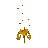

Seers' Village (underground)
Underground area at 2692, 9889 · Kingdom of Kandarin, Underground
Open on the world map → Open in knowledge graph → Surface: Seers' Village
NPCs
| NPC | Level | Spawns | Notable drops |
|---|---|---|---|
| 35 | 5 | ||
 Fire elemental | 35 | 1 | |
| Water elemental | 34 | 1 |